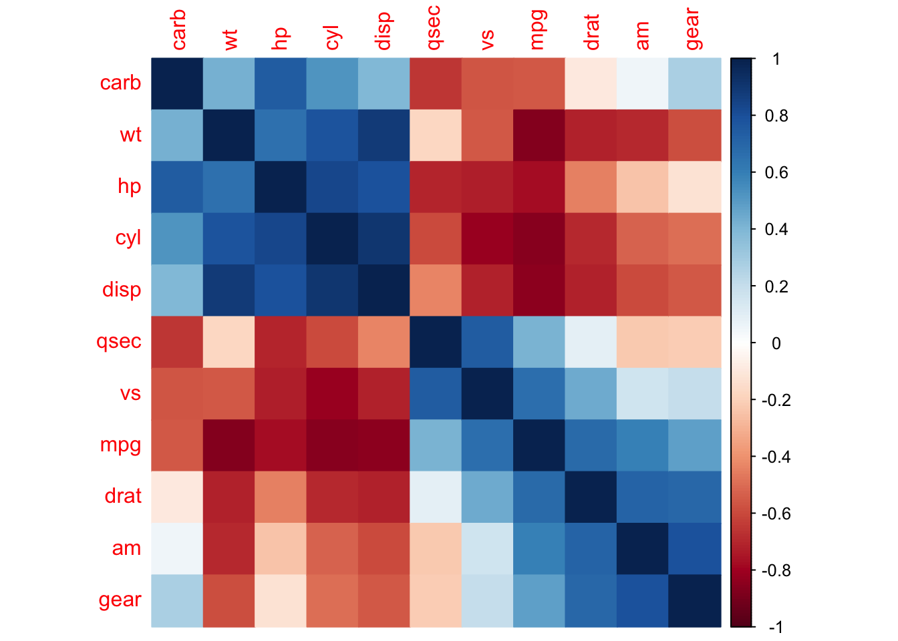

install.packages("Stat2Data")18 Ковариация и корреляция
Возьмем новый набор данных, на этот раз про американских студентов, вес их рюкзаков и проблемы со спиной. Этот набор данных хранится в пакете Stat2Data — пакет с большим количеством разнообразных данных.
С помощью функции data() загрузим набор данных Backpack:
library(tidyverse)── Attaching packages ─────────────────────────────────────── tidyverse 1.3.2 ──
✔ ggplot2 3.4.0 ✔ purrr 1.0.1
✔ tibble 3.1.8 ✔ dplyr 1.1.0
✔ tidyr 1.3.0 ✔ stringr 1.5.0
✔ readr 2.1.3 ✔ forcats 1.0.0
── Conflicts ────────────────────────────────────────── tidyverse_conflicts() ──
✖ dplyr::filter() masks stats::filter()
✖ dplyr::lag() masks stats::lag()library(Stat2Data)
data(Backpack)Давайте посмотрим, что внутри этой переменной:
skimr::skim(Backpack)| Name | Backpack |
| Number of rows | 100 |
| Number of columns | 9 |
| _______________________ | |
| Column type frequency: | |
| factor | 3 |
| numeric | 6 |
| ________________________ | |
| Group variables | None |
Variable type: factor
| skim_variable | n_missing | complete_rate | ordered | n_unique | top_counts |
|---|---|---|---|---|---|
| Major | 0 | 1 | FALSE | 41 | Bio: 9, Bus: 8, LS: 7, ME: 6 |
| Sex | 0 | 1 | FALSE | 2 | Fem: 55, Mal: 45 |
| Status | 0 | 1 | FALSE | 2 | U: 97, G: 3 |
Variable type: numeric
| skim_variable | n_missing | complete_rate | mean | sd | p0 | p25 | p50 | p75 | p100 | hist |
|---|---|---|---|---|---|---|---|---|---|---|
| BackpackWeight | 0 | 1 | 11.66 | 5.77 | 2.00 | 8.00 | 11.00 | 14.25 | 35.00 | ▅▇▂▁▁ |
| BodyWeight | 0 | 1 | 153.05 | 29.40 | 105.00 | 130.00 | 147.50 | 170.00 | 270.00 | ▆▇▂▁▁ |
| Ratio | 0 | 1 | 0.08 | 0.04 | 0.02 | 0.05 | 0.07 | 0.10 | 0.18 | ▆▇▆▃▁ |
| BackProblems | 0 | 1 | 0.32 | 0.47 | 0.00 | 0.00 | 0.00 | 1.00 | 1.00 | ▇▁▁▁▃ |
| Year | 0 | 1 | 3.20 | 1.39 | 0.00 | 2.00 | 3.00 | 4.00 | 6.00 | ▃▆▇▆▆ |
| Units | 0 | 1 | 14.27 | 2.81 | 0.00 | 13.00 | 15.00 | 16.00 | 19.00 | ▁▁▁▇▆ |
С помощью ?Backpack можно получить подробное описание колонок этого датасета.
Например, можно заметить, что масса как самих студентов, так и их рюкзаков выражена в фунтах. Давайте создадим новые переменные backpack_kg и body_kg, в которых будет записан вес (рюкзаков и самих студентов соответственно) в понятным для нас килограммах. Новый набор данных сохраним под названием back.
back <- Backpack %>%
mutate(backpack_kg = 0.45359237 * BackpackWeight,
body_kg = 0.45359237 * BodyWeight)До этого мы говорили о различиях между выборками. Теперь мы будем говорить о связи между переменными.
18.1 Ковариация
Самая простая мера связи между двумя переменными — это ковариация. Если ковариация положительная, то чем больше одна переменная, тем больше другая переменная. При отрицательной ковариации все наоборот: чем больше одна переменная, тем меньше другая.
- Формула ковариации:
\[\sigma_{xy} = cov(x, y) = \frac{\sum_{i = 1}^n(x_i - \overline{x})(y_i - \overline{y})}{n}\]
- Оценка ковариации по выборке:
\[\hat{\sigma}_{xy} = \frac{\sum_{i = 1}^n(x_i - \overline{x})(y_i - \overline{y})}{n-1}\]
Ковариация переменной самой с собой — дисперсия.
В R есть функция cov() для подсчета ковариации. На самом деле, функция var() делает то же самое. Обе эти функции считают сразу матрицу ковариаций для всех сочетаний колонок на входе:
back %>%
select(body_kg, backpack_kg) %>%
cov() body_kg backpack_kg
body_kg 177.807700 6.601954
backpack_kg 6.601954 6.838333back %>%
select(body_kg, backpack_kg) %>%
var() body_kg backpack_kg
body_kg 177.807700 6.601954
backpack_kg 6.601954 6.838333Ну а по углам этой матрицы – дисперсии!
Однако у ковариации есть серьезное ограничение – ее размер привязан к исходной шкале, поэтому сложно оценить, насколько ковариация большая или маленькая. Поэтому на практике гораздо больше используются коэффициенты корреляции.
18.2 Корреляция
Корреляцией обычно называют любую связь между двумя переменными, это просто синоним слова “ассоциация”. Если вдруг слово “корреляция” вам еще непривычно, то попробуйте мысленно заменять “корреляцию” на “ассоциацию”, а “коррелирует” на “связано”. Коэффициент корреляции — это уже конкретная математическая формула, которая позволяет посчитать эту связь и принимает значения от -1 до 1.1
Если коэффициент корреляции положительный, то чем больше значения в одной переменной, тем больше значения в другой переменной.
Если коэффициент корреляции отрицательный, то чем больше значения в одной переменной, тем меньше значения в другой переменной.
Если коэффициент корреляции равен 0, то изменения одной переменной не связано с изменениями в другой переменной.
18.2.1 Коэффициент корреляции Пирсона
Самый известный коэффициент корреляции - коэффициент корреляции Пирсона:
\[\rho_{xy} = \frac{\sigma_{xy}}{\sigma_x \sigma_y} = \frac{\sum_{i = 1}^n(x_i - \overline{x})(y_i - \overline{y})}{\sqrt{\sum_{i = 1}^n(x_i - \overline{x})^2}\sqrt{\sum_{i = 1}^n(y_i - \overline{y})^2}} = \frac{1}{n}\sum_{i = 1}^n z_{x,i} z_{y, i}\]
Оценка коэффициента корреляции Пирсона по выборке: \[r_{xy} = \frac{\hat{\sigma}_{xy}}{\hat{\sigma}_x \hat{\sigma}_y} = \frac{\sum_{i = 1}^n(x_i - \overline{x})(y_i - \overline{y})}{\sqrt{\sum_{i = 1}^n(x_i - \overline{x})^2}\sqrt{\sum_{i = 1}^n(y_i - \overline{y})^2}} = \frac{1}{n - 1}\sum_{i = 1}^n z_{x,i} z_{y, i}\]
Коэффициент корреляции Пирсона можно понимать по-разному. С одной стороны, это просто ковариация, нормированная на стандартное отклонение обоих переменных. С другой стороны, можно понимать это как среднее произведение z-оценок.
Корреляцию в R можно посчитать с помощью функции cor():
back %>%
select(body_kg, backpack_kg) %>%
cor() body_kg backpack_kg
body_kg 1.0000000 0.1893312
backpack_kg 0.1893312 1.0000000Для тестирования уровня значимости нулевой гипотезы для корреляции есть функция cor.test(). В случае с коэффициентами корреляции, нулевая гипотеза формулируется как отсутствие корреляции (т.е. она равна нулю) в генеральной совокупности.
cor.test(back$backpack_kg, back$body_kg)
Pearson's product-moment correlation
data: back$backpack_kg and back$body_kg
t = 1.9088, df = 98, p-value = 0.05921
alternative hypothesis: true correlation is not equal to 0
95 percent confidence interval:
-0.007360697 0.371918344
sample estimates:
cor
0.1893312 Результат выполнения этой функции очень похож на то, что мы получали при проведении t-теста.
18.2.2 Непараметрические коэффициенты корреляции
У коэффициента корреляции Пирсона, как и у t-теста, есть свои непараметрические братья: коэффициент корреляции Спирмена и коэффициент корреляции Кэнделла. Из них чаще используется коэффициент корреляции Спирмена. Посчитать его можно с помощью той же функции cor.test(), задав соответствующее значение параметра method =:
cor.test(back$backpack_kg, back$body_kg, method = "spearman")Warning in cor.test.default(back$backpack_kg, back$body_kg, method =
"spearman"): Cannot compute exact p-value with ties
Spearman's rank correlation rho
data: back$backpack_kg and back$body_kg
S = 131520, p-value = 0.03527
alternative hypothesis: true rho is not equal to 0
sample estimates:
rho
0.2108001 cor.test(back$backpack_kg, back$body_kg, method = "kendall")
Kendall's rank correlation tau
data: back$backpack_kg and back$body_kg
z = 2.083, p-value = 0.03725
alternative hypothesis: true tau is not equal to 0
sample estimates:
tau
0.1478736 Заметьте, в данном случае два метода хотя и привели к схожим размерам корреляции, но в одном случае p-value оказался больше 0.05, а в другом случае - меньше 0.05. Выбирать тест a posteriori на основе того, какие результаты вам нравятся больше, — плохая практика (@ref(bad_practice)). Не надо так делать.
18.3 Корреляционная матрица
Возможно, вы нашли что-то более интересное для проверки гипотезы о корреляции. Например, вы еще хотите проверить гипотезу о связи количества учебных кредитов и массе рюкзака: логично предположить, что чем больше студент набрал себе курсов, тем тяжелее его рюкзак (из-за большего количества учебников). Или что студенты к старшим курсам худеют и становятся меньше. Или что те, кто набрал себе много курсов, меньше питаются и от того меньше весят. В общем, хотелось бы прокоррелировать все интересующие нас переменные со всеми. Это можно сделать с помощью функции cor():
back %>%
select(body_kg, backpack_kg, Units, Year) %>%
cor() body_kg backpack_kg Units Year
body_kg 1.00000000 0.18933115 -0.23524088 -0.09301727
backpack_kg 0.18933115 1.00000000 0.09438453 0.05762194
Units -0.23524088 0.09438453 1.00000000 -0.02946373
Year -0.09301727 0.05762194 -0.02946373 1.00000000Но функция cor()не позволяет посчитать p-value для этих корреляций! Функция cor.test() позволяет получить p-value, но только для одной пары переменных.
На помощь приходит пакет psych с функцией corr.test():
back %>%
select(body_kg, backpack_kg, Units, Year) %>%
psych::corr.test()Call:psych::corr.test(x = .)
Correlation matrix
body_kg backpack_kg Units Year
body_kg 1.00 0.19 -0.24 -0.09
backpack_kg 0.19 1.00 0.09 0.06
Units -0.24 0.09 1.00 -0.03
Year -0.09 0.06 -0.03 1.00
Sample Size
[1] 100
Probability values (Entries above the diagonal are adjusted for multiple tests.)
body_kg backpack_kg Units Year
body_kg 0.00 0.30 0.11 1
backpack_kg 0.06 0.00 1.00 1
Units 0.02 0.35 0.00 1
Year 0.36 0.57 0.77 0
To see confidence intervals of the correlations, print with the short=FALSE optionТем не менее, если у вас много гипотез для тестирования, то у вас появляется проблема: вероятность выпадения статистически значимых результатов сильно повышается. Даже если эти переменные никак не связаны друг с другом.
Эта проблема называется проблемой множественных сравнений (multiple comparisons problem) 2. Если мы проверяем сразу несколько гипотез, то у нас возрастает групповая вероятность ошибки первого рода (Family-wise error rate) — вероятность ошибки первого рода для хотя бы одной из множества гипотез.
Например, если вы коррелируете 10 переменных друг с другом, то вы проверяете 45 гипотез о связи. Пять процентов из этих гипотез, т.е. в среднем 2-3 гипотезы у вас будут статистически значимыми даже если никаких эффектов на самом деле нет!
Поэтому если вы проверяете сразу много гипотез, то необходимо применять поправки на множественные сравнения (multiple testing correction). Эти поправки позволяют контролировать групповую вероятность ошибки первого рода на желаемом уровне. Самая простая и популярная поправка на множественные сравнения — поправка Бонферрони (Bonferroni correction). Она считается очень просто: мы просто умножаем p-value на количество проверяемых гипотез!
back %>%
select(body_kg, backpack_kg, Units, Year) %>%
psych::corr.test(adjust = "bonferroni")Call:psych::corr.test(x = ., adjust = "bonferroni")
Correlation matrix
body_kg backpack_kg Units Year
body_kg 1.00 0.19 -0.24 -0.09
backpack_kg 0.19 1.00 0.09 0.06
Units -0.24 0.09 1.00 -0.03
Year -0.09 0.06 -0.03 1.00
Sample Size
[1] 100
Probability values (Entries above the diagonal are adjusted for multiple tests.)
body_kg backpack_kg Units Year
body_kg 0.00 0.36 0.11 1
backpack_kg 0.06 0.00 1.00 1
Units 0.02 0.35 0.00 1
Year 0.36 0.57 0.77 0
To see confidence intervals of the correlations, print with the short=FALSE optionЭто очень “дубовая” и излишне консервативная поправка. Да, она гарантирует контроль групповую вероятности ошибки первого рода, но при этом сильно повышает вероятность ошибки второго рода — вероятность пропустить эффект, если он на самом деле существует. Поэтому по умолчанию в R используется более либеральная поправка на множественные сравнения под названием поправка Холма или поправка Холма-Бонферрони (Holm-Bonferroni correction), которая, тем не менее, тоже гарантирует контроль групповой вероятности ошибки первого рода.
Альтернативный подход к решению проблемы множественных сравнений — это контроль средней доли ложных отклонений (False Discovery Rate; FDR) на на уровне не выше уровня \(\alpha\). Это более либеральный подход: в данном случае мы контролируем, что ложно-положительных результатов у нас не больше, например, 5%. Такой подход применяется в областях, где происходит масштабное множественное тестирование. Попытка контролировать групповую вероятность ошибки первого уровня не выше уровня \(\alpha\) привела бы к чрезвычайно низкой вероятности обнаружить хоть какие-нибудь эффекты (т.е. к низкой статистической мощности).
Самая известная поправка для контроля средней доли ложных отклонений — это поправка Бенджамини — Хохберга (Benjamini-Hochberg correction).
back %>%
select(body_kg, backpack_kg, Units, Year) %>%
psych::corr.test(adjust = "BH")Call:psych::corr.test(x = ., adjust = "BH")
Correlation matrix
body_kg backpack_kg Units Year
body_kg 1.00 0.19 -0.24 -0.09
backpack_kg 0.19 1.00 0.09 0.06
Units -0.24 0.09 1.00 -0.03
Year -0.09 0.06 -0.03 1.00
Sample Size
[1] 100
Probability values (Entries above the diagonal are adjusted for multiple tests.)
body_kg backpack_kg Units Year
body_kg 0.00 0.18 0.11 0.54
backpack_kg 0.06 0.00 0.54 0.68
Units 0.02 0.35 0.00 0.77
Year 0.36 0.57 0.77 0.00
To see confidence intervals of the correlations, print with the short=FALSE optionВсе перечсиленные поправки (и еще несколько других) доступны не только в функции corr.test(), но и в базовом R с помощью функции p.adjust(). Эта функция принимает вектор из p-value и возвращает результат применения поправок.
p_vec <- seq(0.0001, 0.06, length.out = 10)
p_vec [1] 0.000100000 0.006755556 0.013411111 0.020066667 0.026722222 0.033377778
[7] 0.040033333 0.046688889 0.053344444 0.060000000p.adjust(p_vec) #по умолчанию используется поправка Холма-Бонферрони [1] 0.0010000 0.0608000 0.1072889 0.1404667 0.1603333 0.1668889 0.1668889
[8] 0.1668889 0.1668889 0.1668889p.adjust(p_vec, method = "bonferroni") [1] 0.00100000 0.06755556 0.13411111 0.20066667 0.26722222 0.33377778
[7] 0.40033333 0.46688889 0.53344444 0.60000000p.adjust(p_vec, method = "BH") [1] 0.00100000 0.03377778 0.04470370 0.05016667 0.05344444 0.05562963
[7] 0.05719048 0.05836111 0.05927160 0.0600000018.4 Хитмэп корреляций
Как видите, почти все коррелирует друг с другом, даже с учетом поправок. Такие множественные корреляции лучше всего смотреть с помощью хитмап-визуализации.
В качестве примера возьмем встроенный датасет mtcars, в котором есть множество количественных переменных.
mtcars mpg cyl disp hp drat wt qsec vs am gear carb
Mazda RX4 21.0 6 160.0 110 3.90 2.620 16.46 0 1 4 4
Mazda RX4 Wag 21.0 6 160.0 110 3.90 2.875 17.02 0 1 4 4
Datsun 710 22.8 4 108.0 93 3.85 2.320 18.61 1 1 4 1
Hornet 4 Drive 21.4 6 258.0 110 3.08 3.215 19.44 1 0 3 1
Hornet Sportabout 18.7 8 360.0 175 3.15 3.440 17.02 0 0 3 2
Valiant 18.1 6 225.0 105 2.76 3.460 20.22 1 0 3 1
Duster 360 14.3 8 360.0 245 3.21 3.570 15.84 0 0 3 4
Merc 240D 24.4 4 146.7 62 3.69 3.190 20.00 1 0 4 2
Merc 230 22.8 4 140.8 95 3.92 3.150 22.90 1 0 4 2
Merc 280 19.2 6 167.6 123 3.92 3.440 18.30 1 0 4 4
Merc 280C 17.8 6 167.6 123 3.92 3.440 18.90 1 0 4 4
Merc 450SE 16.4 8 275.8 180 3.07 4.070 17.40 0 0 3 3
Merc 450SL 17.3 8 275.8 180 3.07 3.730 17.60 0 0 3 3
Merc 450SLC 15.2 8 275.8 180 3.07 3.780 18.00 0 0 3 3
Cadillac Fleetwood 10.4 8 472.0 205 2.93 5.250 17.98 0 0 3 4
Lincoln Continental 10.4 8 460.0 215 3.00 5.424 17.82 0 0 3 4
Chrysler Imperial 14.7 8 440.0 230 3.23 5.345 17.42 0 0 3 4
Fiat 128 32.4 4 78.7 66 4.08 2.200 19.47 1 1 4 1
Honda Civic 30.4 4 75.7 52 4.93 1.615 18.52 1 1 4 2
Toyota Corolla 33.9 4 71.1 65 4.22 1.835 19.90 1 1 4 1
Toyota Corona 21.5 4 120.1 97 3.70 2.465 20.01 1 0 3 1
Dodge Challenger 15.5 8 318.0 150 2.76 3.520 16.87 0 0 3 2
AMC Javelin 15.2 8 304.0 150 3.15 3.435 17.30 0 0 3 2
Camaro Z28 13.3 8 350.0 245 3.73 3.840 15.41 0 0 3 4
Pontiac Firebird 19.2 8 400.0 175 3.08 3.845 17.05 0 0 3 2
Fiat X1-9 27.3 4 79.0 66 4.08 1.935 18.90 1 1 4 1
Porsche 914-2 26.0 4 120.3 91 4.43 2.140 16.70 0 1 5 2
Lotus Europa 30.4 4 95.1 113 3.77 1.513 16.90 1 1 5 2
Ford Pantera L 15.8 8 351.0 264 4.22 3.170 14.50 0 1 5 4
Ferrari Dino 19.7 6 145.0 175 3.62 2.770 15.50 0 1 5 6
Maserati Bora 15.0 8 301.0 335 3.54 3.570 14.60 0 1 5 8
Volvo 142E 21.4 4 121.0 109 4.11 2.780 18.60 1 1 4 2Для визуализации возьмем пакет {corrplot}.
install.packages("corrplot")Для начала нам нужно построить матрицу корреляций. Уже знакомая нам функция cor() для это вполне подойдет:
library(corrplot)corrplot 0.92 loadedcor(mtcars) mpg cyl disp hp drat wt
mpg 1.0000000 -0.8521620 -0.8475514 -0.7761684 0.68117191 -0.8676594
cyl -0.8521620 1.0000000 0.9020329 0.8324475 -0.69993811 0.7824958
disp -0.8475514 0.9020329 1.0000000 0.7909486 -0.71021393 0.8879799
hp -0.7761684 0.8324475 0.7909486 1.0000000 -0.44875912 0.6587479
drat 0.6811719 -0.6999381 -0.7102139 -0.4487591 1.00000000 -0.7124406
wt -0.8676594 0.7824958 0.8879799 0.6587479 -0.71244065 1.0000000
qsec 0.4186840 -0.5912421 -0.4336979 -0.7082234 0.09120476 -0.1747159
vs 0.6640389 -0.8108118 -0.7104159 -0.7230967 0.44027846 -0.5549157
am 0.5998324 -0.5226070 -0.5912270 -0.2432043 0.71271113 -0.6924953
gear 0.4802848 -0.4926866 -0.5555692 -0.1257043 0.69961013 -0.5832870
carb -0.5509251 0.5269883 0.3949769 0.7498125 -0.09078980 0.4276059
qsec vs am gear carb
mpg 0.41868403 0.6640389 0.59983243 0.4802848 -0.55092507
cyl -0.59124207 -0.8108118 -0.52260705 -0.4926866 0.52698829
disp -0.43369788 -0.7104159 -0.59122704 -0.5555692 0.39497686
hp -0.70822339 -0.7230967 -0.24320426 -0.1257043 0.74981247
drat 0.09120476 0.4402785 0.71271113 0.6996101 -0.09078980
wt -0.17471588 -0.5549157 -0.69249526 -0.5832870 0.42760594
qsec 1.00000000 0.7445354 -0.22986086 -0.2126822 -0.65624923
vs 0.74453544 1.0000000 0.16834512 0.2060233 -0.56960714
am -0.22986086 0.1683451 1.00000000 0.7940588 0.05753435
gear -0.21268223 0.2060233 0.79405876 1.0000000 0.27407284
carb -0.65624923 -0.5696071 0.05753435 0.2740728 1.00000000Основная функция пакета {corrplot} – функция corrplot(). Давайте теперь попробуем ее применить на нашей матрице корреляций.
corrplot(cor(mtcars))
По умолчанию значение корреляций кодируется цветом и размером круга. У функции corrplot() есть множество параметров, позволяющих довольно тонко настраивать хитмэп корреляций. Например, можнокодировать только цветом, а переменные сгруппировать на основе кластеризации.
corrplot(cor(mtcars), method = "color", order = "hclust")
18.5 Матрица корреляций в виде графа
install.packages("corrr")library(corrr)Функционал пакета {corrr} позволяет работать с корреляционными матрицами в духе tidyverse, возвращая тиббл вместо матрицы.
correlate(mtcars)Correlation computed with
• Method: 'pearson'
• Missing treated using: 'pairwise.complete.obs'# A tibble: 11 × 12
term mpg cyl disp hp drat wt qsec vs am
<chr> <dbl> <dbl> <dbl> <dbl> <dbl> <dbl> <dbl> <dbl> <dbl>
1 mpg NA -0.852 -0.848 -0.776 0.681 -0.868 0.419 0.664 0.600
2 cyl -0.852 NA 0.902 0.832 -0.700 0.782 -0.591 -0.811 -0.523
3 disp -0.848 0.902 NA 0.791 -0.710 0.888 -0.434 -0.710 -0.591
4 hp -0.776 0.832 0.791 NA -0.449 0.659 -0.708 -0.723 -0.243
5 drat 0.681 -0.700 -0.710 -0.449 NA -0.712 0.0912 0.440 0.713
6 wt -0.868 0.782 0.888 0.659 -0.712 NA -0.175 -0.555 -0.692
7 qsec 0.419 -0.591 -0.434 -0.708 0.0912 -0.175 NA 0.745 -0.230
8 vs 0.664 -0.811 -0.710 -0.723 0.440 -0.555 0.745 NA 0.168
9 am 0.600 -0.523 -0.591 -0.243 0.713 -0.692 -0.230 0.168 NA
10 gear 0.480 -0.493 -0.556 -0.126 0.700 -0.583 -0.213 0.206 0.794
11 carb -0.551 0.527 0.395 0.750 -0.0908 0.428 -0.656 -0.570 0.0575
# … with 2 more variables: gear <dbl>, carb <dbl>Нас же интересует в первую очередь представление матрицы корреляций в виде графа.
Делается это следующим образом: мы устанавливаем минимальное значение для корреляций с помощью параметра min_cor =, которые будут отображены в качестве связи между переменными. Если мы этого не сделаем, то мы просто получим полностью связанный граф, потому что все переменные хотя бы немного коррелируют со всеми. По умолчанию этот параметр равен 0.3, но мы можем изменить это значение на собственное усмотрение. В данном случае установим min_cor = 0.7, потому что в нашей матрице очень много сильных корреляций.
correlate(mtcars) %>%
corrr::network_plot(min_cor = 0.7)Correlation computed with
• Method: 'pearson'
• Missing treated using: 'pairwise.complete.obs'
Впрочем, это не так уж и важно: на практике часто опускают слово “коэффициент” и называют корреляцией как и просто связь, так и ее способ измерения.↩︎
“Проблема множественных сравнений” - это устоявшийся термин, который используется и в случае множественных корреляций, и в случае множественных сравнений средних и в любых других случаях с тестированием нескольких гипотез одновременно.↩︎